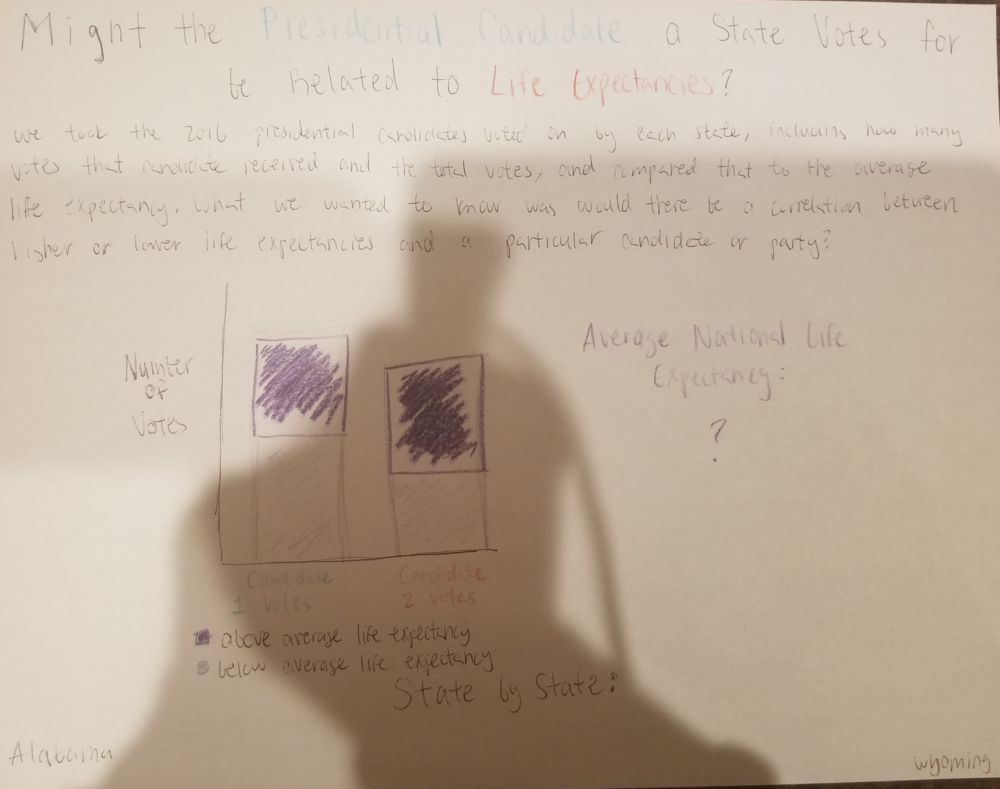
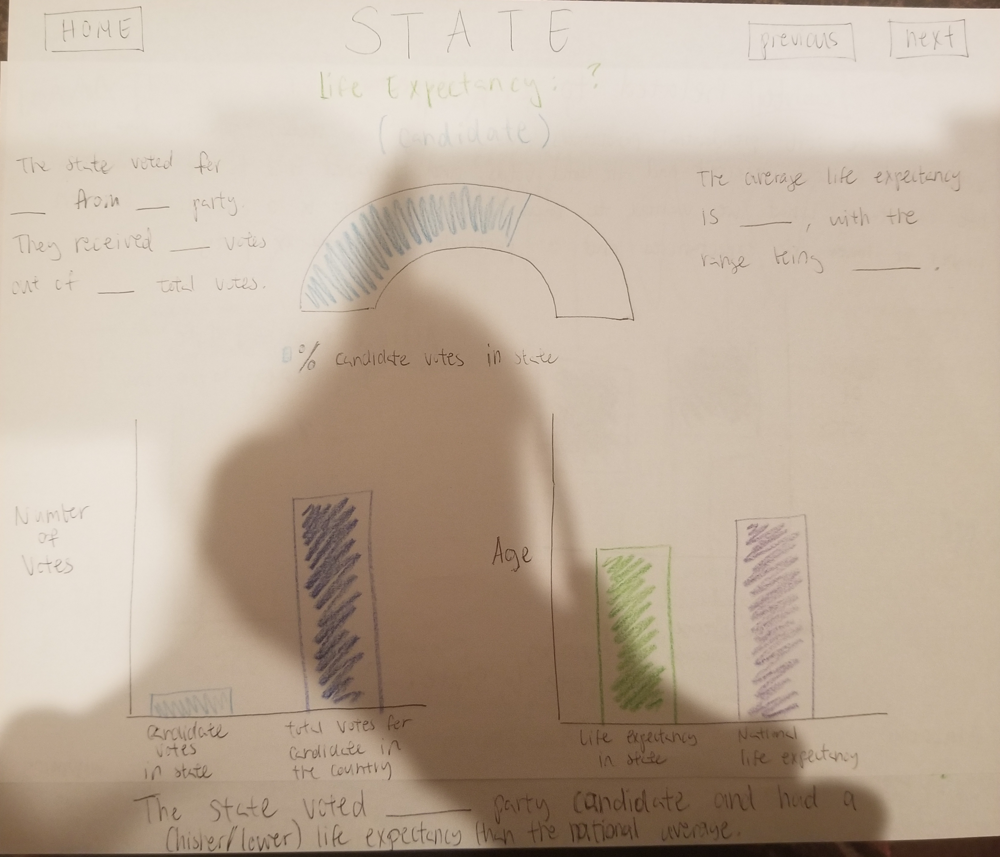
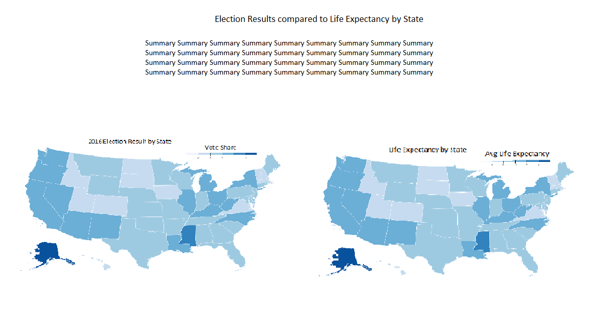
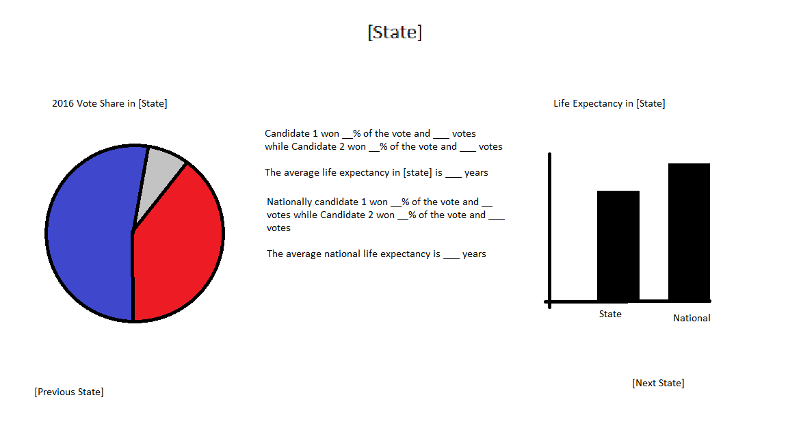

For the first step of gathering and cleansing the data, we parse through all of the data, take information for the 50 states and DC,
and then organize that data in an object and create a json file to store that object
Next is the build, the first part of which is precompiling, which includes deleting all of the files in
the build folder and copying everything in the public folder.
In compile, we compile all of the ejs files for the index, about page, and micro summary
pages into html pages in the build folder
Then we use Lint to check for errors and Jest to run tests on our data, ensuring the correct formatting and content
In the final part of the build, we generate documentation using Javadoc
Lastly, we display the landing page, about page, and micro summary pages with their respective text and infographics
Important Vocabulary
Life Expectancy: the average number of years a newborn is expected to live if mortality patterns at the time of its birth remain constant in the future
Democratic Candidate: the candidate nominated by the democratic party
Republican Candidate: the candidate nominated by the republican party
Democratic Votes: the number of votes cast for the democratic candidate
Republican Votes: the number of votes cast for the republican candidate
Democratic Percentage: the amount of democratic votes out of the entire number of votes
Republican Percentage: the amount of republic votes out of the entire number of votes


Understandability
Diagrams are large and mostly centered on the page, allowing for users to easily understand the information
Different colors are also utilized and consistent throughout the pages
Mapping
The landing page's bar chart clearly shows the national relationship between life expectancy and candidates
Uses the real world red and blue color conventions for parties
The micro summary page clearly separated the state information and the state vs national comparisons by having one on the top and the other on the bottom
Political Intent
Landing and micro summary pages just display data about election results, which in itself is neural
However, the reader will intepret that data in a way that isn't neutral, which we intend upon
Simplicity
Most of the data is displayed in a few large, easy to read charts
However, the large text showing the life expectancy on the landing page takes away from the simplicity of the design and the graph next to it
The larger take away sentence on the micro summary page is at the bottom of the page rather than the top, making it slightly more difficult for people to find that information
The graph on the bottom left of the micro summary page provides a comparison that isn't completely relevant to the larger topic


Understandability
Maps give an intuitive way to display large amounts of information
Color scheme makes the diagrams understandable and engaging
Discoverability
The comparison between both data sets is clear on the landing page and on the micro summaries
Landing page maps are clickable and interacting with them will direct the user to the appropriate page
Political Intent
Also presents data objectively with graphs and diagrams, which are intend to be intrepreted potilically by the reader
Micro summary pages contain less graphs comparing state stastistics with the national, creating less of an intent for the reader to compare state election and life expectancy results
with that of the rest of the country
Achievability
D3's choropleth map makes making maps very achievable
Other forms of charts and text are also intuitive to make
Final Design
Landing page uses side by side maps with election results and life expectancies respectively, which we chose to allow for an easy visual comparison between the two data sets
We decided upon an interactive combined map that incorporates both data sets to allows users to easily navigate to individual state pages
State micro pages begin with a brief text-based summary and comparison to national data in order for viewers to both understand the data and the context for the data
Below that is a diagram that compares state data to national data
Underneath that are side by side diagrams of the individual data with a detailed text summary in the middle, in order to give viewers a detailed explanations of the graphs and increasing understandability